Temple Album
☰
Home
Old
New
Large
Small
Temple Gallery
Bahia Temple
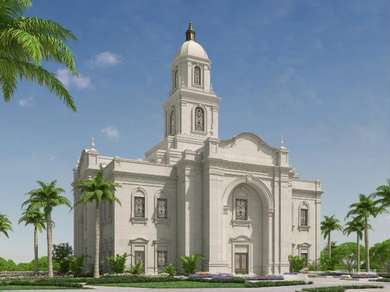
Bahia Temple
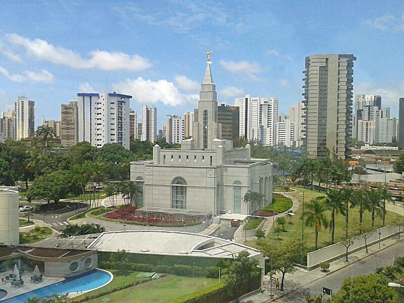
Recife Temple
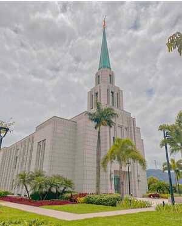
Rio de Janeiro Temple
São Paulo Temple
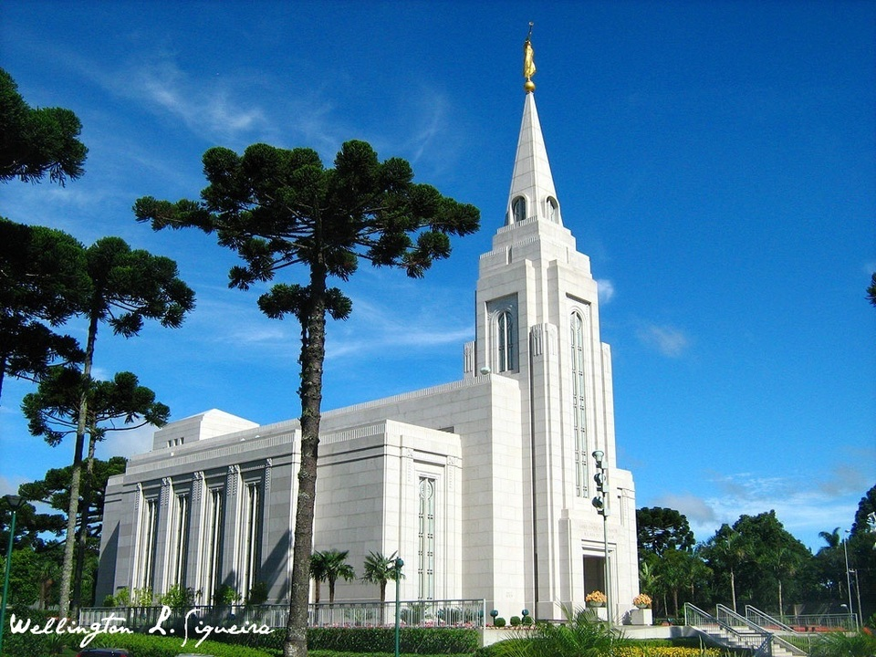
Curitiba Temple
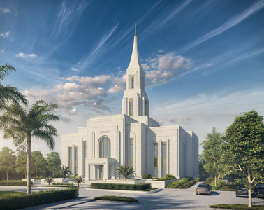
Santa Catarina Temple
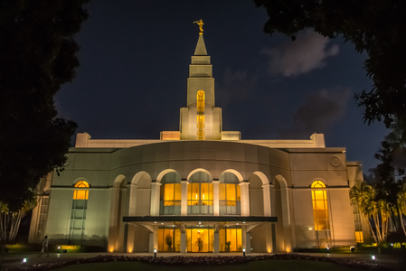
Ceará Temple
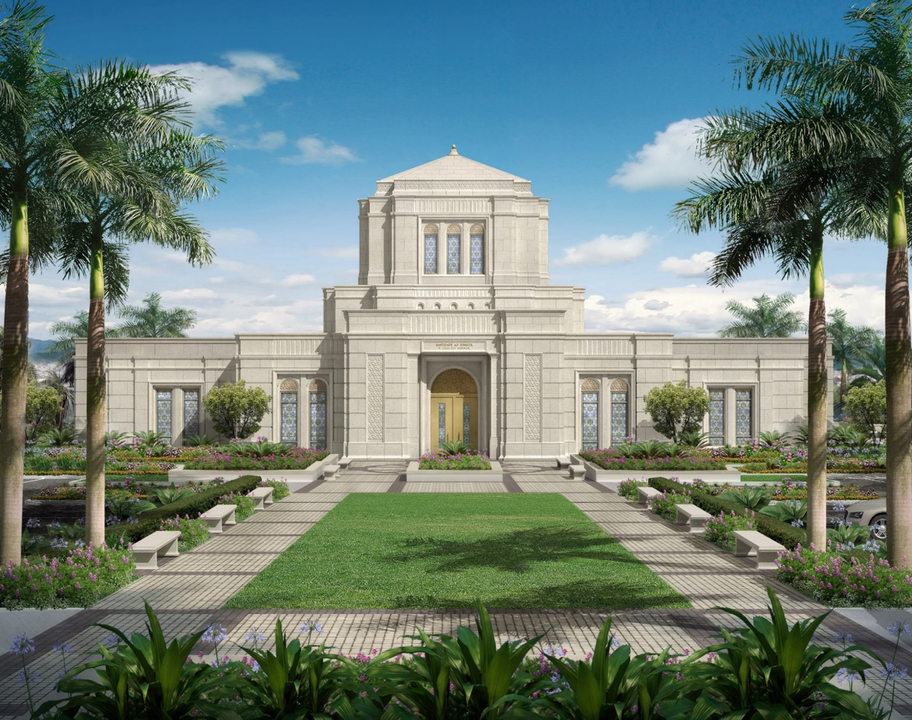
Minas Gerais Temple
 São Paulo Temple
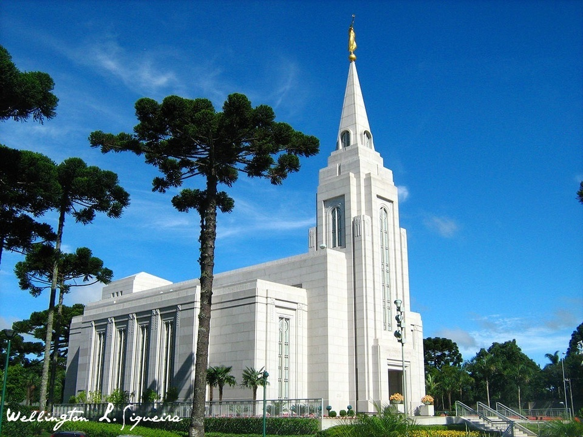
Curitiba Temple
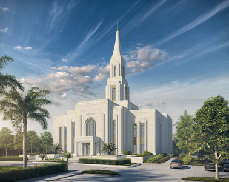
Santa Catarina Temple
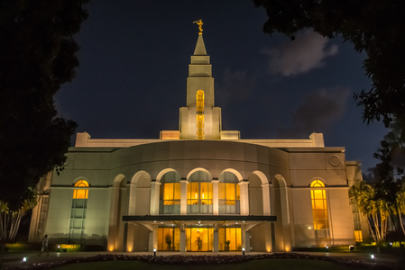
Ceará Temple
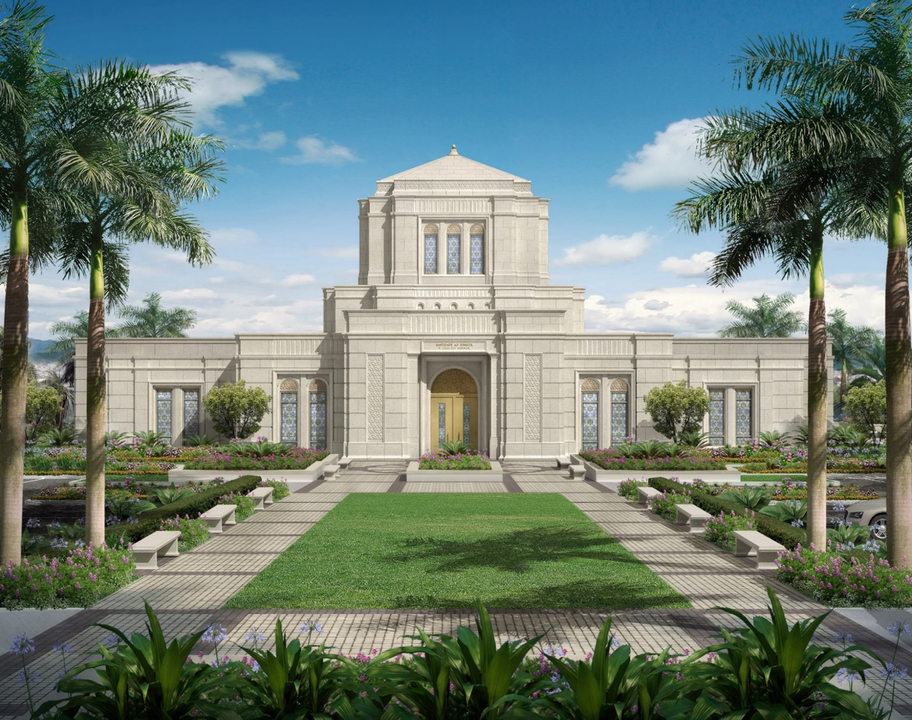
Minas Gerais Temple
São Paulo Temple
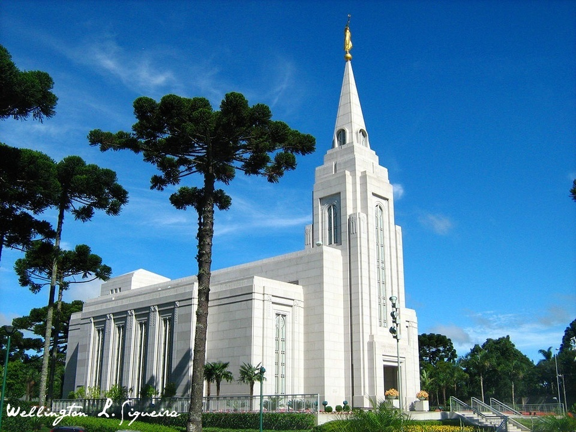
Curitiba Temple
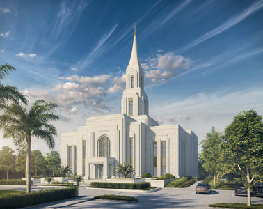
Santa Catarina Temple
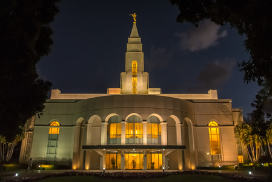
Ceará Temple
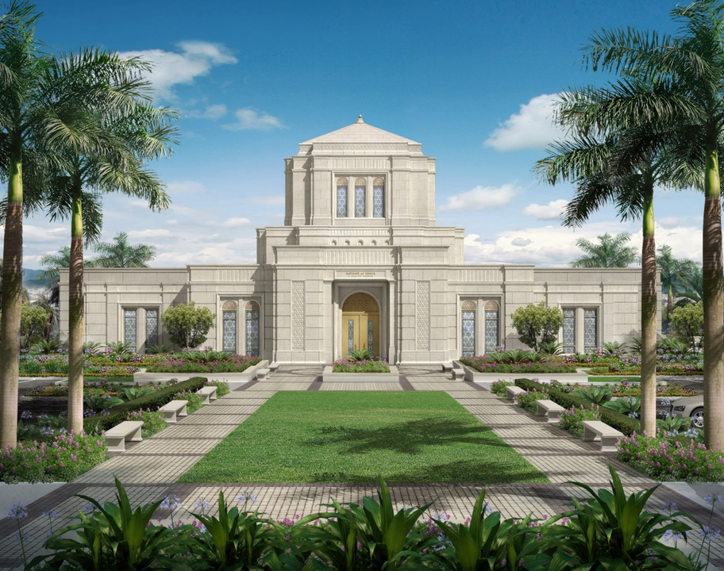
Minas Gerais Temple